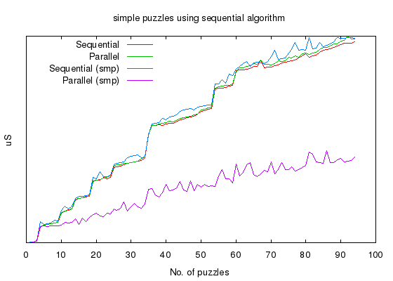
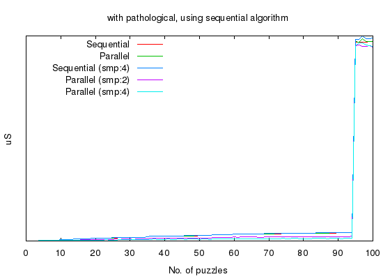
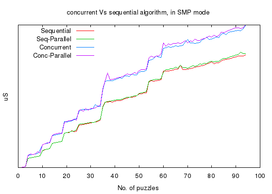
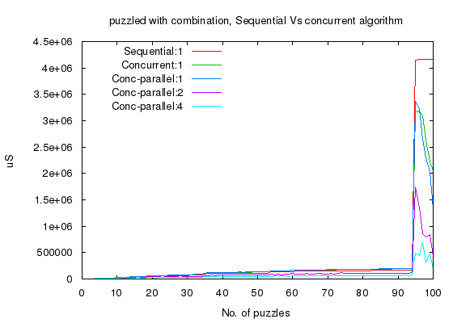

For past three decades semiconductor industry promised to double the speed of microprocessor every two years, and they did keep to their promise. Now, it looks like they have exhausted all the available tricks and the only way to increase computation speed is by going parallel - packing more number of cores in the same die. But that ain't so easy, for it requires re-designing our algorithms to run parallel. Enter concurrent programming. Erlang is one such language that encourages concurrency.
Concurrent programming is a paradigm of writing computer programs that can execute in parallel. Three decades of structured programming concepts popularized by languages like C and Java have made the entire eco-system of computer applications optimized for sequential programming. Now, even when we are ready to redesign our algorithms for concurrency, its implementation, testing and deployment are making life difficult for us. The general focus on Erlang here is that it may save us from some of those difficulties. Let us experiment couple of scenarios using sudoku.
To the algorithm
The backtracking algorithm that solves sudoku puzzle has exponential complexity, and suffers from pathological combinations that can throw the algorithm into a for-ever-loop. By tweaking the input combination and few other parameters we can adjust the complexity of the problem and study the behavior of Erlang and its run-time.
The algorithm works on an unsolved sudoku puzzle, with N elements pre-populated - which is the measure of difficulty. That is, say for a 9x9 table of numbers, may be just 10 can be pre-populated. The number of elements that are pre-populated can also be supplied as difficulty parameter. The algorithm itself uses a double recursive backtracking logic to find the right combination of numbers satisfying the game rules. So, for a 9x9 table with 10 pre-populated elements, the program must fill the remaining 71 slots and for each slot there are 9 choices ([1,2,3,4,5,6,7,8,9]).
The first recursion logic moves from one slot to the next, column-wise and then row-wise. At every step, it tries to reduce the available choices for an unfilled slot. There are 6 intelligent functors that applies primitive human logic to reduce the choices. It then detects whether it has taken the right path by checking with the game rules. If it detects that it has taken a bad path it backtracks.
The second recursion logic kicks in when the first recursive function detects that it has taken the right path (so far), and finds that the current slot has more than one choice left un-reducible. The logic will recur over each of the available choices and calling back to first recursion logic. So on and so forth ...
Let us have some hands on with the code now,
# solve a single sudoku puzzle of complexity 3 (9x9) and difficulty 40%
$ bin/sudoku -c 3 -d 40 -s 1123
complexity:3 count:1 difficulty:40 seed:1123
Time taken to evaluate 6329uS
Above, sudoku script generates a 9x9 puzzle, populating 40% of the slots. And it took 6.3 milli-seconds to solve the puzzle. The -s option provides seed value to the random-generator - so that same set of puzzles will be generated for the same seed value. Note that the puzzle is solved using a sequential backtracking algorithm explained above.
All measurements are taken with my 2Ghz Core-2 Quad desktop.
Using the same parameters but solving 100 puzzles - sequentially,
# solve a single sudoku puzzle of complexity 3 (9x9) and difficulty 40%
$ bin/sudoku -c 3 -d 40 -s 1123 -n 100
complexity:3 count:100 difficulty:40 seed:1123
Time taken to evaluate 1182004uS
took about 1.2 seconds ! On an average, this algorithm takes about 12 milli-seconds to solve a puzzle. Note that we used a pure-sequential version of the algorithm for this measurements.
This type of algorithm is necessary to check how friendly is Erlang in designing complex algorithms with concurrency. And of course its performance. But before that we will see how easy and efficient it is to get started with concurrent programming in Erlang.
simple concurrency with erlang
Before we transform the algorithm into a concurrent one, we will try to measure how simple-concurrency, like what we see with web-servers serving simultaneous requests, fair with erlang. The objective here is to solve large number of puzzles - first, sequentially one after the other - next, parallely spawning one process for each puzzle. Thus we measure its scalability and efficiency.
For the sake of clarity let us define the terms - sequential, parallel and concurrent, used in this article.
- sequential,
- sequential version of algorithm that uses a single core, even if more than one core is available.
- parallel,
- sequential version of algorithm used to solve more than one puzzle simultaneously. Although each puzzle will utilize single core, more number of puzzles can be solved parallely thus utilizing all the available cores.
- concurrent,
- concurrent version of algorithm where each puzzle utilizes all the available cores.
We will run the same script with few more switches,
$ bin/sudoku -c 3 -n 94 -d 60 -s 1123 -benchmark # SMP disabled
Above command generates puzzles of complexity 3, 9x9 sudoku table, populating 60% of the slots. Same seed value will generate same set of tables. The script outputs three columns,
- first column, no. of puzzles solved.
- second-column time taken to solve sequentially.
- third-column time taken to solve parallel, one erlang-process for each puzzle.
bin/sudoku was executed in SMP disabled mode by adding the following header in the beginning.
#!/usr/bin/env escript
%% -*- erlang -*-
%%! -smp disable
Then again, the same script is executed with same switches but with two cores enabled, by replacing -smp disable with +S 2:2.
And again, the same script is executed with 4 cores enabled, that is, using the +S 4:4 switch.
Data from 3 different runs are aggregated and plotted using gnuplot.
We can observe that, simple-concurrency scales almost linearly with number of cores and at the same time efficient enough to give same performance without SMP.
Now let us repeat the above exercise by increasing the number of puzzles from 94 to 100.
$ bin/sudoku -c 3 -n 100 -d 60 -s 1123 -benchmark # SMP disabled
Again we will have to execute this script in three different modes, SMP disabled, SMP with 2 cores and SMP with 4 cores. When the aggregate data is plotted,
Note that time taken to solve puzzles shoots up from 95th puzzle. Now, this a pathological combination for our algorithm and the combination looks like this
{{0,0,2,0,0,4,0,0,9},
{0,0,0,0,0,9,0,0,0},
{0,6,0,0,0,0,0,4,8},
{0,3,5,0,0,0,0,0,0},
{0,0,6,0,0,0,1,0,0},
{0,9,0,0,0,5,0,0,4},
{4,0,0,0,5,0,0,0,0},
{6,0,0,0,0,2,0,0,0},
{9,0,0,0,4,6,0,0,0}}.
When compared to this pathological combination, the performance improvements that we achieved due to simple concurrency is negligible.
pathological case
A pathological case is an input combinations that can make the puzzle solver to keep executing bad paths for a long time before finding the right path.
Any backtracking algorithm, while executing, will have to make several choices before finding the right solution. We will take our Sudoku puzzle solver as an example and expound further -
For a 9x9 puzzle, with 10 elements pre-populated, should leave 71 slots unfilled. And for each slot there are 9 choices to make [1,2,3,4,5,6,7,8,9]. If we are using a brute force backtracking algorithm, it will have to pass 71 steps (to fill each slot) and for each step it will have to make nine choices, making the number of possible paths to
56392087339601733413306017749077372989860250021295987473736382457209L,
(do not try to interpret, it is way beyond trillions)
This is the worst case for a brute force backtracking algorithm before it succeeds or fails. But our implementation is not brute force ! It uses intelligent functors to reduce the choices for each slot.
For the sake of argument, let us say that the functors are able to reduce the number of choices to 2 - all the time. Then our algorithm will have to pass 71 steps and for each step it will have to make 2 choices. This will reduce the number of possible paths to (in worst case)
2361183241434822606848L.
It will still take light years to exhaust all possible paths.
So, let us add concurrency to our algorithm and measure how it fairs. Please note that we are making the algorithm itself concurrent to solve a single tough puzzle.
concurrent sudoku puzzle solver
To explain how the concurrent algorithm works we are going to use the pathological combination as the example
{{0,0,2,0,0,4,0,0,9},
{0,0,0,0,0,9,0,0,0},
{0,6,0,0,0,0,0,4,8},
{0,3,5,0,0,0,0,0,0},
{0,0,6,0,0,0,1,0,0},
{0,9,0,0,0,5,0,0,4},
{4,0,0,0,5,0,0,0,0},
{6,0,0,0,0,2,0,0,0},
{9,0,0,0,4,6,0,0,0}}.
In above case, first slot is unfilled and our functors can reduce the choices to [1,3,5,7,8]. Once the algorithm knows that those are un-reducible choices, it will spawn 5 processes, picking a unique choice for each one of them. Each of those process will continue from the second slot and repeat the same logic all over again.
Soon our algorithm is going to spawn millions and millions of processes only to find that it has taken a bad path. So we will add a cap on the maximum number of processes it can spawn, say 100 !
All I did was to change couple of lines in existing code and add another 40 lines to implement the concurrent logic. With our algorithm re-designed, there are two configuration parameters that are worth mentioning,
- concurrent,
- boolean(), false to use sequential algorithm and true to a concurrent backtracking algorithm.
- procs,
- Integer(), while executing in concurrent mode, limits the number of spawn-able process.
concurrent version
We will now run our script using the concurrent version, using -t switch, and measure performance for 94 puzzles (not including the pathological case).
$ bin/sudoku -c 3 -n 94 -d 60 -s 1123 -t -benchmark # SMP diabled
Then again, the same script is executed with same switches but SMP enabled with 2 cores and then with 4 cores..
Data when plotted looks like
We could see that our concurrent algorithm scales well with number of cores and clearly gives a better performance over sequential version of the algorithm. On the other hand there is a slight over-head when executing concurrent algorithm without SMP.
Now we move on to the pathological case, and execute our script in three different modes,
# SMP enabled
$ bin/sudoku -c 3 -n 100 -d 60 -s 1123 -t -benchmark
and plot our aggregate data,
If you notice there is something interesting going on here, for instance we get 10x improvement for pathalogical combination. Not only that we get 2-3x improvement for pathological combination even when SMP is disabled !!
welcome to swarm algorithms ;)
Long ago, I wrote a similar Sudoku puzzle solver in C / Linux, but the best part of writting it in Erlang is the way it prompted me to re-design the algorithm for concurrency. In C, I would have never thought of spawning a new process for every choice it makes, but here it was only natural.
That is how a language can affect our creativity, be it for programming or for poetry. And it is those simple and un-assuming things that changes one's perspective.